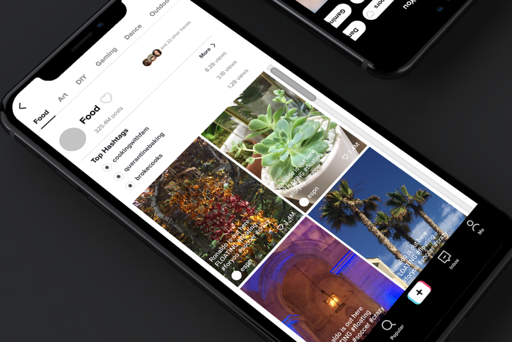

Hi, I’m Erika. I’m a digital product designer who enjoys solving challenging problems that have a meaningful impact on people’s lives. Incoming UX Designer and Researcher @ Capital One.
More about meIncreasing Engagement on Users’ Websites • Winter 2021
As a Product Design Intern at Beacons, I designed and shipped a feature allowing users to organize their websites into pages. This makes it easier for visitors to their site to find what they are looking for and engage with their site.
Read Case Study

Taking Control of Your Content • Spring 2020
A feature to help users take control over their Tik Tok feeds. Involves user research, low-fi to high-fi prototypes, and usability testing.
Read Case Study